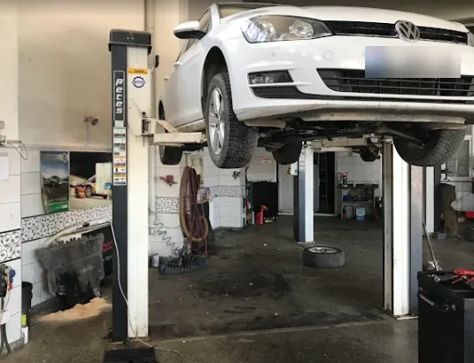

01
DOĞRU TEŞHİS
Arızanın kaynağını anlamaya yönelik sistematik kontrol ve teşhis süreci.

Professional Automotive Service· Göksun
Profesyonel bakım, arıza tespiti ve onarım hizmetlerinde
şeffaf ve planlı servis deneyimi.
Online randevu
Size uygun günü ve saati seçin,
servise gelmeden önce randevunuzu planlayın.
Telefonla randevu için 0 (344) 714 36 36
Neden BYM?
Aracınızı bıraktığınızda ne yapılacağını bilirsiniz. Onayınız olmadan işlem yapılmaz ve aracınız kontrolleri tamamlanarak teslim edilir.
Arızanın kaynağını anlamaya yönelik sistematik kontrol ve teşhis süreci.
Yapılacak işlemler hakkında sizi süreç boyunca bilgilendiriyoruz.
Müşteri onayı olmadan ek işlem yapılmaz.
İşlem sonrası gerekli kontroller tamamlanarak araç teslim sürecine alınır.
Hizmetler
Üretici bakım takvimine uygun yağ, filtre ve genel kontroller.
Arıza kodlarının okunması ve sorunun kaynağına yönelik kontroller.
Motor, triger, soğutma ve mekanik aksam onarımları.
Akü, marş, şarj sistemi ve elektrik arızaları.
Balata, disk, amortisör ve alt takım kontrolleri.
Klima performans kontrolü, gaz ve kaçak kontrolleri.
Vites geçişi, debriyaj ve şanzıman kontrolleri.
Yol öncesi, muayene öncesi ve alım öncesi genel kontroller.
Belirti rehberi
Belirtiyi seçin; olası nedenleri, kontrol edilecek noktaları ve servis sürecini görün.
Motor kontrol ünitesi, izlediği bir değerin normal aralığın dışına çıktığını algıladığında lambayı yakar ve bir arıza kaydı oluşturur. Lambanın sabit yanması ile yanıp sönmesi farklı aciliyetlere işaret edebilir.
Lamba yanıp sönüyorsa aracı zorlamadan kullanmayı bırakmanız önerilir.
Bu bilgiler genel yönlendirme içindir. Kesin teşhis, araç kontrol edildikten sonra konur.
Titreşimin ne zaman hissedildiği (rölantide, belirli bir hızda, frenlemede veya hızlanırken) kaynağı hakkında önemli bir ipucu verir. Randevu açıklamasına bunu yazmanız kontrolü kolaylaştırır.
Bu bilgiler genel yönlendirme içindir. Kesin teşhis, araç kontrol edildikten sonra konur.
Frenlerden gelen ses her zaman ciddi bir arıza anlamına gelmez; ancak fren sistemi doğrudan güvenliğinizi etkilediği için sesin kaynağının bilinmesi önemlidir.
Metal sürtünme sesi duyuyor ya da fren pedalı yumuşamışsa kontrolü ertelemeyin.
Bu bilgiler genel yönlendirme içindir. Kesin teşhis, araç kontrol edildikten sonra konur.
Marşın ağır basması ya da aracın birkaç denemede çalışması, özellikle soğuk havalarda sık görülür. Sorun her zaman aküde değildir.
Bu bilgiler genel yönlendirme içindir. Kesin teşhis, araç kontrol edildikten sonra konur.
Soğutma performansının düşmesi çoğu zaman gaz eksikliği, bir kaçak veya hava akışını engelleyen bir tıkanıklıkla ilgilidir.
Bu bilgiler genel yönlendirme içindir. Kesin teşhis, araç kontrol edildikten sonra konur.
Güç kaybı; aracın hava, yakıt, turbo veya egzoz sistemlerinden birinde değerlerin düşmesiyle ortaya çıkabilir. Bazı araçlar bir arıza algıladığında motoru korumak için güvenli moda geçer.
Bu bilgiler genel yönlendirme içindir. Kesin teşhis, araç kontrol edildikten sonra konur.
Vitesin zor geçmesi, vites atması ya da otomatik şanzımanda sert veya geç geçişler; debriyaj, bağlantı mekanizması, yağ veya kontrol sistemiyle ilgili olabilir.
Bu bilgiler genel yönlendirme içindir. Kesin teşhis, araç kontrol edildikten sonra konur.
Tüketimdeki artış; sürüş koşulları ve mevsim gibi normal etkenlerden de, aracın yanlış yakıt karışımıyla çalışmasına yol açan bir sorundan da kaynaklanabilir.
Bu bilgiler genel yönlendirme içindir. Kesin teşhis, araç kontrol edildikten sonra konur.
Servis süreci
Her adımda ne olduğunu bilirsiniz. Onayınız alınmadan işleme geçilmez.
Size uygun gün ve saati seçin.
Aracınız servis sürecine alınır.
Gerekli kontroller ve teşhis gerçekleştirilir.
Tespit edilen işlemler size aktarılır.
Onayınızdan sonra işleme başlanır.
Kontroller tamamlanır ve araç teslim edilir.
Servisten gerçek görüntüler
Servisimizden gerçek görüntüler. Stok fotoğraf kullanmıyoruz.
Yorumlar
4,3/ 5 · Google'da 43 yorum (Eylül 2026 itibarıyla)
“Aracınıza tepeden tırnağa her türlü bakımı yaptırabileceginiz biyer”
Sitemizde yalnızca Google İşletme Profili'mizdeki gerçek yorumlara yer veriyoruz.
Google'da tüm yorumları görSSS
Sitemizdeki randevu formundan hizmeti, aracınızı ve size uygun gün ile saati seçin. Talebiniz WhatsApp üzerinden ekibimize iletilir; uygunluk durumunu teyit etmek için sizinle iletişime geçilir. Telefonla da randevu alabilirsiniz.
Hayır. Kontrol sonucunda tespit edilen işlemler ve gerekli parçalar size aktarılır; onayınız olmadan ek işlem yapılmaz.
Pazartesi–Cumartesi 08:00–19:00 arasında hizmet veriyoruz. Pazar günleri kapalıyız.
Aracınızda fark ettiğiniz belirtiyi (ne zaman, hangi koşulda ortaya çıktığını) not etmeniz kontrol sürecini hızlandırır. Varsa bakım kayıtlarınızı da getirebilirsiniz.
Bilgi merkezi
Motor arıza lambasının yanmasının en yaygın nedenleri, sabit yanması ile yanıp sönmesi arasındaki fark ve ne zaman beklemeden servise gitmeniz gerektiği.
Yazıyı okuBakım aralığı nasıl belirlenir, ağır kullanım koşulları neden bakımı öne çeker ve bakımda genellikle hangi işlemler yapılır?
Yazıyı okuGıcırtı, sürtünme, tıkırtı: Fren seslerinin anlamı ve hangi seslerin acil kontrol gerektirdiği.
Yazıyı okuSize uygun zamanı seçin,
randevunuzu oluşturun.
BYM Automotive · Professional Automotive Service
İletişim
Tabelanın üzerindeki kırmızı aracı gördüğünüzde doğru yerdesiniz.